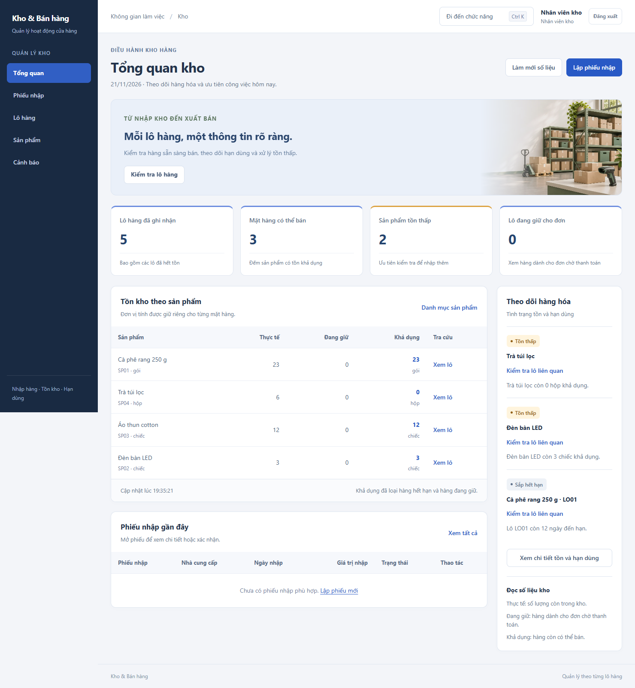
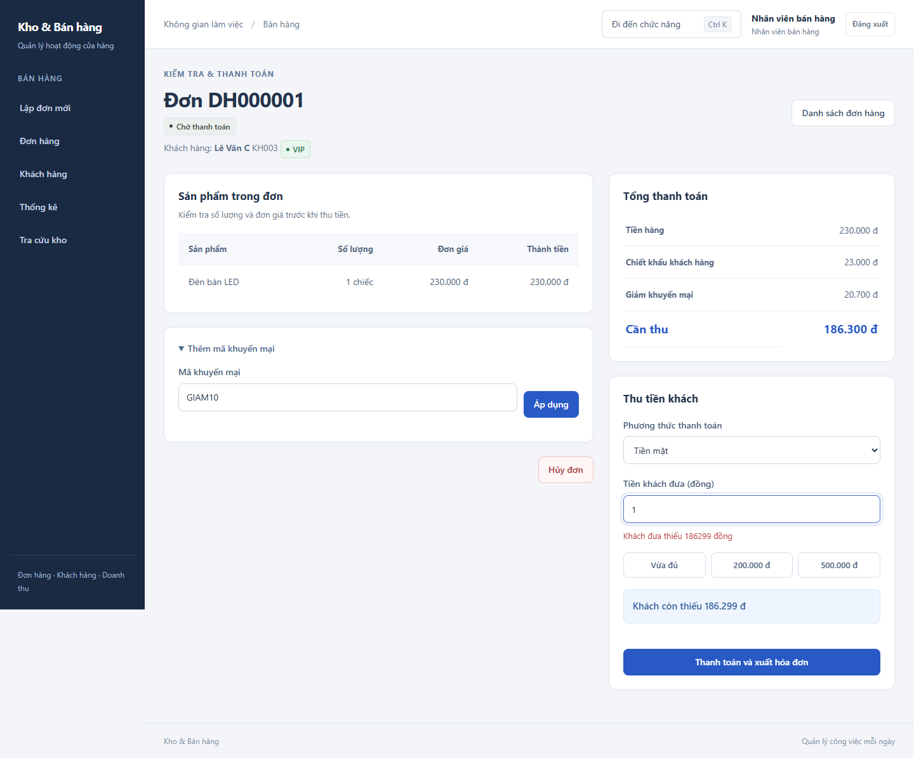
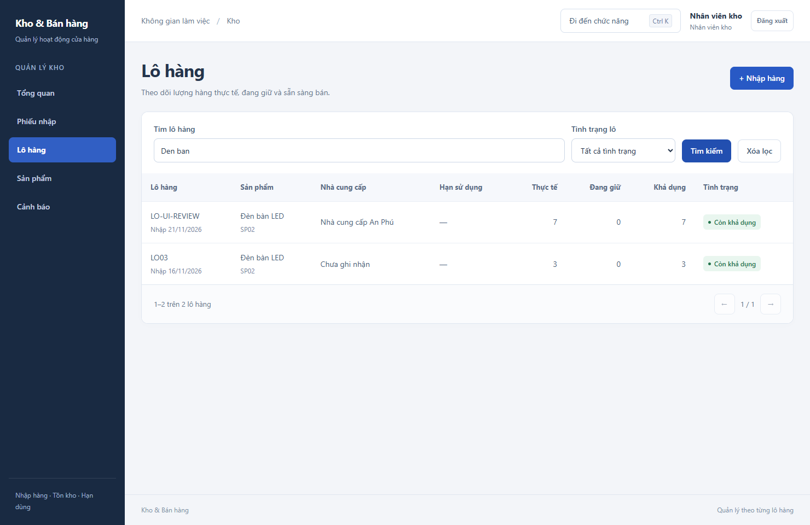
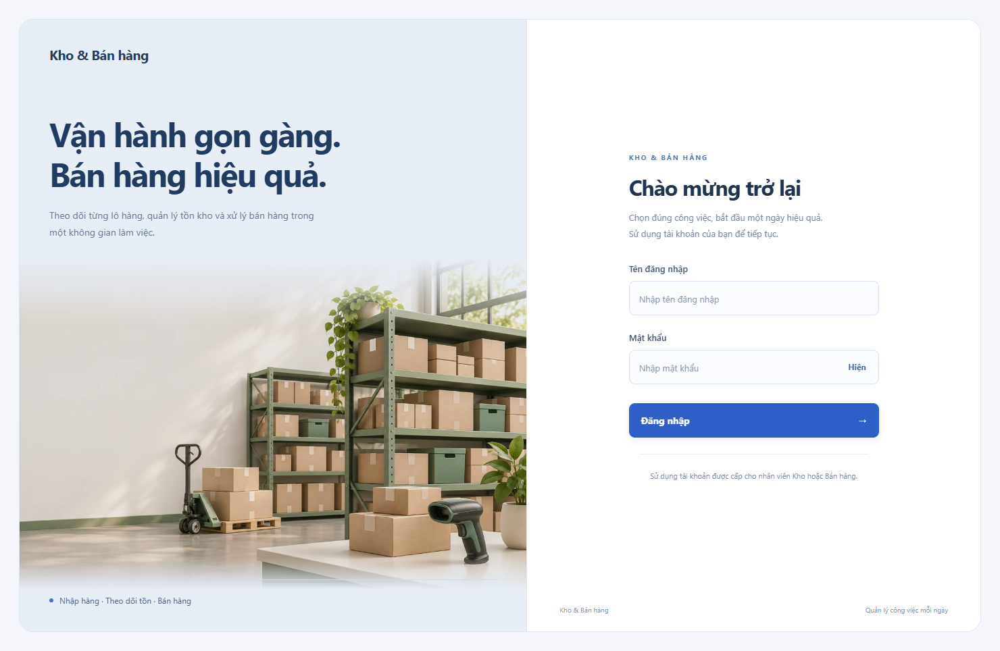

BÀN GIAO · 21/11/2026
Nâng cấp thuật toán, phân trang và thao tác Kho & Bán hàng
Mã nguồn: C:\Users\Admin\Downloads\Web-quan-ly-ban-hang. Giữ Flask, SQLite, Jinja và JavaScript thuần. Đã sửa trực tiếp mã nguồn, thử với CSDL tạm, lưu số đo và ảnh để đối chiếu. Không seed lại, di chuyển hoặc sửa dữ liệu nghiệp vụ đang dùng.
Phạm vi xác minh: VS Code có workspace trỏ đúng dự án. Không tìm thấy tiến trình Python đang chạy từ thư mục dự án; truy cập socket 127.0.0.1:5000 bị môi trường chặn với WinError 10013. Chrome thực thi giao diện thật; HTTP được chuyển qua Flask test_client bằng IPC đến CSDL tạm. Đây là kiểm thử tích hợp trên bản thử, chưa phải xác minh ứng dụng người dùng đang mở qua cổng localhost.
1. Lỗi và điểm nghẽn đã xử lý
| Ưu tiên | Vấn đề tái hiện | Thay đổi và bằng chứng |
|---|
| Nghiệp vụ/quyền | Danh sách có thể hiện đơn của nhân viên khác nhưng mở chi tiết lại bị 403. | Danh sách chỉ trả đơn của người lập theo chính sách sở hữu đang có. Lịch sử khách vẫn hiện tóm tắt các đơn khác nhưng bỏ liên kết thao tác ngoài quyền. Test phân quyền đạt. |
| OOP | Trạng thái và danh sách chi tiết đơn có thể bị thay đổi trực tiếp, bỏ qua phương thức miền. | Trạng thái là property chỉ đọc, chi tiết trả tuple, dòng đơn frozen. Thay đổi qua phương thức miền; Map mã sản phẩm → vị trí giúp gộp dòng và giữ giá đã chốt. |
| Hiệu năng | Hỏi tồn cho SP02 vẫn hydrate toàn bộ 10.000 lô. | Đọc các lô thuộc nhóm sản phẩm cần hỏi bằng IN, chia nhóm 400 mã. Không cache tồn. Test xác nhận không đọc lô ngoài nhóm. |
| Hiệu năng | Đọc đơn 1.000 dòng tạo 1.003 SELECT. | Đọc danh sách sản phẩm theo lượt và ghép bằng dictionary; còn 6 SELECT trên cùng fixture. |
| Thao tác/dữ liệu | Đơn, khách, phiếu, lô tải danh sách lớn rồi chia ở trình duyệt. | COUNT + LIMIT/OFFSET trong snapshot chỉ đọc; thứ tự ổn định, kiểm tra page/page_size, giới hạn 100 dòng, tìm không dấu trên server. Giao diện giữ bộ lọc và trang trong URL. |
| Dashboard | Tải toàn bộ lô để tính vài chỉ số; trang Sản phẩm cũng dùng toàn bộ lô. | API tổng hợp SQL riêng cho dashboard và tồn sản phẩm. Không trả chi tiết 10.000 lô lên trình duyệt. Tồn thực tế/giữ/khả dụng được đối chiếu với nghiệp vụ miền. |
| UX | Phân trang/ trạng thái tải chưa thống nhất; lỗi nhập kho chỉ nằm ở thông báo chung. | Chung bộ điều khiển phân trang, số dòng/trang ở Bán hàng; hủy truy vấn cũ; trạng thái tải/rỗng/lỗi; lỗi nhập kho có focus và thông báo tại trường. Không khôi phục thẻ đỏ hay logo K/B. |
2. Số đo trước và sau
Cùng fixture: 1.000 sản phẩm, 10.000 lô, 1.000 đơn, 1.003 khách, 1.000 phiếu nhập; Python 3.13.9, SQLite cục bộ. Thời gian là trung vị 3 lượt gọi repository/service, không bao gồm HTTP hay vẽ trang. Số SELECT lấy từ SQLite trace; bytes là JSON UTF-8 serialize kết quả benchmark, không phải dung lượng mạng nén.
Danh sách sau sửa trả trang đầu 20 dòng, có tổng số và metadata; không so sánh một trang mới với việc tải toàn bộ như hai tác vụ tương đương. Đọc tồn và đọc đơn giữ cùng phạm vi kết quả. Baseline lô được đo trên đường gọi legacy tải toàn bộ với cùng fixture sau khi thêm chỉ mục; không gộp nó vào baseline nguyên trạng của năm tác vụ còn lại. Thời gian có dao động theo tải máy, không cam kết tương tự trên máy khác.
EXPLAIN xác nhận idx_lo_hang_ma_sp cho truy vấn tồn theo sản phẩm; idx_don_nhan_vien_ngay là covering index cho danh sách đơn theo nhân viên. Tìm chứa từ không dấu vẫn cần quét các dòng phù hợp, OFFSET sâu và COUNT vẫn có chi phí; chưa cần thêm cache hoặc công cụ tìm kiếm cho quy mô thử này.
Baseline gốc · Legacy lô · Kết quả cuối + query plan · Script tái đo
3. Lớp và contract liên quan
| Thành phần | Trách nhiệm/thuộc tính chính | Phương thức hoặc thay đổi |
|---|
| DonHang / ChiTietDonHang | _trang_thai, _chi_tiet, _vi_tri; dòng đơn bất biến, tiền nguyên đồng. | them_chi_tiet gộp bằng Map, xac_nhan_cho_thanh_toan/ap_dung_khuyen_mai/danh_dau_da_thanh_toan/huy bảo vệ vòng đời. Không sửa public state/details trực tiếp. |
| ITraCuuSanPham | Contract đọc sản phẩm dùng chung. | Bổ sung tim_nhieu(cac_ma) có mặc định cho adapter cũ; repository thật đã override đọc theo lượt. Không thêm abstract method bắt adapter cũ phải viết lại. |
| LoHangRepository / KhoService | Đọc tồn đúng nhóm, giữ FEFO và trừ lượng giữ. | tim_theo_nhieu_san_pham(cac_ma); lay_so_luong_kha_dung_nhieu không đọc mọi lô. Tính lại sau mỗi giao dịch, không cache. |
| DonHangRepository / KhachHangRepository | Đọc đơn/khách, tìm kiếm, lịch sử. | tim_theo_ma đọc theo lượt; danh sách nhận page/page_size tùy chọn. Danh sách đơn nhận ma_nv để controller áp quyền. |
| KhoTruyVanRepository | Read model phục vụ UI; không ghi nghiệp vụ. | phieu_nhap, lo_hang, tong_quan, ton_san_pham; SQL giữ công thức khả dụng; snapshot của dashboard giúp số liệu nhất quán trong một lượt đọc. |
| phan_trang / tim_kiem | Tiện ích repository dùng chung. | doc_phan_trang/lay_trang, chuan_hoa; bind tham số, không nhận SQL tùy ý từ người dùng. |
| migrations | Chỉ mục và đánh dấu phiên bản. | nang_cap_chi_muc idempotent, chạy giao dịch. CLI nang-cap-csdl sao lưu SQLite trước khi tạo chỉ mục. |
| Controller / Route | Xác thực vai trò, đọc tham số và trả DTO. | Không chuyển nghiệp vụ ghi kho sang route. Thêm GET /api/kho/tong-quan và /api/kho/ton-san-pham. Giữ API cũ không phân trang cho bên tích hợp. |
Contract phân trang: Khi có page hoặc page_size, du_lieu là {items,total,page,page_size,pages}. Mặc định page_size=20, hợp lệ 1–100; page ít nhất 1 và được chặn về trang cuối nếu quá tổng. Không truyền cả hai tham số: giữ kết quả list cũ. Lô UI chọn 10 dòng, Bán hàng chọn 10/20/50/100. COUNT và đọc trang chung một snapshot. Tìm không dấu là chứa chuỗi literal; ký tự %/_ không tự trở thành wildcard.
Phân công: Phần Kho do thành viên 1 phụ trách được sửa tại service/repository/controller/UI Kho. Phần dùng chung và Bán hàng được sửa khi cần để xử lý N+1, phân trang, quyền và đóng gói đơn theo yêu cầu hiện tại: contract sản phẩm, domain đơn, repository đơn/khách, controller/service/routes Bán hàng, index.js và phien.js. Không thay công nghệ hay xây lại toàn bộ phần thành viên 2.
Danh sách file đã thêm/sửa trong lượt nâng cấp này
Manifest SHA-256 sau sửa · Manifest trước sửa. Có bản zip nguồn trước sửa lưu trong thư mục làm việc kiểm thử; không chứa CSDL hay khóa môi trường. Không reset Git hoặc tự tạo commit.
4. Kết quả kiểm thử
Python và nghiệp vụ — 22/22 đạt
Gồm factory/đa hình, hash mật khẩu, rate limit, trang độc lập, FEFO bỏ hàng hết hạn, trừ đang giữ, rollback, hai đơn tranh tồn cuối, gọi lặp giữ/xuất không làm sai tồn, nhà cung cấp theo phiếu xác nhận, đọc theo lượt, phân trang/quyền/tìm không dấu, so sánh SQL với miền, đóng gói đơn và migration backup chạy lặp.
Log Python · Log xử lý tiền JavaScript
Trình duyệt — hai kịch bản tích hợp đạt
Chrome headless + Flask test_client + SQLite tạm, dùng Kho thật, không mock nghiệp vụ. Mỗi kịch bản có fixture riêng và dọn CSDL sau chạy.
- Đăng nhập sai/đúng, bật/tắt mật khẩu, đăng xuất, phản hồi 401 khi mất cookie và chuyển về đăng nhập; API sai vai trò bị 403.
- Lập/xác nhận nhập kho, giá 135.000, tên sản phẩm/nhà cung cấp, thực phẩm thiếu ngày bị chặn, lô đã tồn tại nhưng mâu thuẫn sản phẩm bị chặn khi xác nhận và giữ phiếu nháp.
- Phân trang thật trên server của lô/phiếu/đơn/khách; không trùng dòng giữa hai trang, tìm không dấu, kết quả rỗng, xóa lọc, tải lại giữ trang. Fixture nhiều hơn một trang.
- URL Bán hàng độc lập, chuyển menu, tải lại, quay lại/tiến; tra cứu kho chuyển đúng sản phẩm sang lập đơn; thêm khách, lịch sử và escape dữ liệu HTML.
- Khách thường, VIP, khách lẻ; giảm VIP + GIAM10 tính tại backend; kiểm tra tiền thiếu/đủ, nút tiền vừa đủ, tiền có dấu phân cách, tiền thối và in hóa đơn.
- Chuyển khoản ghi nhận thủ công, đối soát số tiền; chặn mã giao dịch trùng và giữ đơn chờ thanh toán. Không có kết nối ngân hàng thật.
- Hủy đơn qua nút UI; tồn khả dụng đọc lại bằng API trở về đúng trước khi lập đơn.
- Gửi lặp ở form đơn/thanh toán, kết quả tìm kiếm đến sai thứ tự, mô phỏng mất kết nối bằng fetch thất bại. Dữ liệu cũ không ghi đè tìm kiếm mới.
- 45 tổ hợp trang × độ rộng 360, 390, 768, 1024, 1440px; kiểm tra không tràn trang. Bảng rộng cuộn trong vùng bảng, menu điện thoại mở/đóng, Escape trả focus; không có pageerror JavaScript trong kịch bản.
Log luồng tích hợp · Log phân trang/responsive/biên · Kiểm tra môi trường
Giới hạn: Chưa kiểm chứng cổng localhost trong phiên ứng dụng người dùng; cần khởi động lại rồi kiểm tra thực tế. Mô phỏng mạng chậm/mất mạng ở client, không phải thử trên mạng vật lý; kiểm thử quyền/vòng đời không thay thế kiểm toán bảo mật. Mất cookie mô phỏng hết phiên; chưa có kiểm thử thời gian thật kéo dài 8 giờ. Không thử mọi tổ hợp sản phẩm/khuyến mại trên dữ liệu vận hành. Không tuyên bố không còn lỗi tuyệt đối.
5. Ảnh giao diện thử
Ảnh dùng dữ liệu thử, không phải dữ liệu vận hành. Các màn hình đăng nhập và thiết kế sẵn có được giữ; lượt này tập trung số liệu, thao tác, phân trang và lỗi tại trường.

Tổng quan: số liệu đúng loại, tồn theo sản phẩm.
VIP + khuyến mại, kiểm tra trước thanh toán.
Lô có tên sản phẩm và nguồn cung có căn cứ.
Đăng nhập và hiển thị lỗi thân thiện.Nhập kho 360px · Lập đơn 360px · Thanh toán tiền mặt
6. Cách chạy và nâng CSDL đang dùng
Trong terminal VS Code ở đúng thư mục dự án, dùng Python đã cài requirements.txt. Giữ cấu hình KBH_CSDL trỏ CSDL hiện tại và KBH_KHOA_BI_MAT hiện có (tối thiểu 16 ký tự). Không chạy seed hoặc tao-schema trên CSDL đang dùng. Migration dưới đây đã được kiểm thử trên CSDL tạm, chưa chạy trên dữ liệu của bạn.
cd C:\Users\Admin\Downloads\Web-quan-ly-ban-hang
python -m flask --app kho_ban_hang.app nang-cap-csdl
python -m flask --app kho_ban_hang.app run --host 127.0.0.1 --port 5000
Mở http://127.0.0.1:5000/dang-nhap, đăng nhập bằng tài khoản hiện tại. Lệnh nâng cấp tạo bản sao *.backup-<UTC>-<id>.db cạnh CSDL trước khi thêm sáu chỉ mục và bảng đánh dấu; không seed hoặc sửa tồn/chứng từ. Nên dừng phiên ứng dụng khi nâng cấp, giữ bản sao trước khi chạy lại. Nếu cần phục hồi, dừng mọi kết nối SQLite và phục hồi từ bản backup; không ghi đè tệp đang có kết nối hoạt động.
Chạy lại kiểm thử và benchmark
python -m unittest discover -s tests -v
node tests/test_frontend.cjs
python scripts/benchmark.py --paged --output artifacts/upgrade-20261121/benchmark-rerun.json
Benchmark tự tạo CSDL tạm. Không truyền đường dẫn CSDL vận hành. Muốn so bản cũ: dùng snapshot nguồn trước nâng cấp ở thư mục riêng với script baseline; không chạy seed trên bản đang dùng. Thêm --only lots để chỉ đo lô.
Chạy lại Chrome tích hợp
Node cần module Playwright; sử dụng runtime đã có hoặc cài ở môi trường phát triển riêng. Hai script dùng Chrome tại đường dẫn mặc định Windows và Python trong PATH, có thể đặt KBH_PYTHON để chọn interpreter có Flask. Trong phiên này đã dùng D:/Data Science/python.exe và Node/Playwright đi kèm Codex.
$env:KBH_PYTHON = "D:/Data Science/python.exe"
node tests/browser/workflows.cjs
node tests/browser/pagination.cjs
Nếu dùng runtime Codex hiện tại, NODE_PATH trỏ thư mục node_modules của runtime; executable node nằm ở bin/node.exe. Script chặn request bên ngoài, chuyển Flask qua IPC, không yêu cầu mở cổng. Ảnh được ghi vào artifacts/upgrade-20261121/ui; CSDL tạm nằm trong Temp và được dọn sau chạy.
7. Tên commit đề xuất theo nhóm
perf(stock): batch lot and product reads to remove N+1 queries
Contract sản phẩm, repository lô/đơn, KhoService và adapter giả.refactor(domain): protect order state and immutable order lines
Domain đơn và kiểm thử đóng gói.feat(lists): add server pagination and consistent order permissions
Repository đọc, controller/service/routes, tìm kiếm không dấu, API tổng hợp, migration và CLI backup.feat(ui): unify pagers, warehouse summaries and field feedback
JS Kho/Bán hàng, phien.js, workspace.css, template phiếu.test: add workflow regressions and performance evidence
Kiểm thử Python/Chrome, benchmark, artifacts và báo cáo bàn giao.
Các nhóm có phụ thuộc: commit backend trước UI và chạy lại bộ kiểm thử sau khi chia. Chưa tự commit hoặc đẩy Git. Tên chung nếu gộp: feat: optimize inventory workflows, server pagination and unified UI.
8. Tham khảo và hướng phát triển vừa sức đồ án
Giữ FEFO và hạn sử dụng theo cách giải thích trong Odoo FEFO; phân biệt số giữ hàng với tồn thực tế theo hướng ERPNext Stock Reservation. InvenTree Stock Tracking là tham khảo nếu sau này thêm nhật ký biến động kho.
Đánh giá OOP: kiến trúc hiện tại đủ để bảo vệ đồ án nếu hai thành viên giải thích được contract, đa hình sản phẩm/khách/khuyến mại/thanh toán và giao dịch giữ–xuất hàng. Cải tiến lần này làm rõ đóng gói đơn và kiểm chứng sự nhất quán giữa read model SQL với domain. Phần nên ưu tiên tiếp theo là migration có phiên bản cho thay đổi schema lớn và lịch sử biến động gắn chứng từ/người/thời điểm khi phát sinh nhu cầu; chưa thêm ledger hoặc cache tồn chỉ để tăng số tính năng.
Khi dữ liệu tăng mạnh hơn 10.000 lô: đo riêng tìm chứa từ và trang sâu, cân nhắc FTS/keyset, phân trang danh mục sản phẩm và bộ chọn khách. Hiện các bộ chọn nhỏ và API legacy vẫn có thể trả toàn danh sách để giữ tương thích; không xem đó là tối ưu vô hạn. Nên có quy trình sao lưu/khôi phục và thử lại trên trình duyệt người dùng sau mỗi lần triển khai localhost.